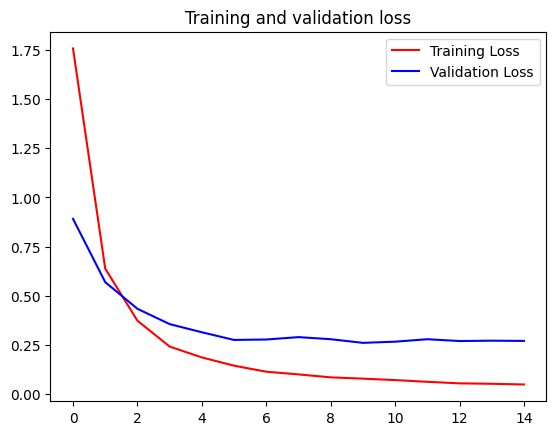

C2W4: Multi-class Classification
Contents
C2W4: Multi-class Classification#
https-deeplearning-ai/tensorflow-1-public/C2/W4/assignment/C2W4_Assignment.ipynb
Commit
d79901fon Feb 23, 2023 - Compare
Sign Language MNIST
28x28 images
26 letters
import csv
import string
import numpy as np
import tensorflow as tf
import matplotlib.pyplot as plt
from tensorflow.keras.preprocessing.image import ImageDataGenerator, array_to_img
# sign_mnist_train.csv
!gdown --id 1z0DkA9BytlLxO1C0BAWzknLyQmZAp0HR
# sign_mnist_test.csv
!gdown --id 1z1BIj4qmri59GWBG4ivMNFtpZ4AXIbzg
TRAINING_FILE = './sign_mnist_train.csv'
VALIDATION_FILE = './sign_mnist_test.csv'
with open(TRAINING_FILE) as training_file:
line = training_file.readline()
print(f"First line (header) looks like this:\n{line}")
line = training_file.readline()
print(f"Each subsequent line (data points) look like this:\n{line}")
First line (header) looks like this:
label,pixel1,pixel2,pixel3,pixel4,pixel5,pixel6,pixel7,pixel8,pixel9,pixel10,pixel11,pixel12,pixel13,pixel14,pixel15,pixel16,pixel17,pixel18,pixel19,pixel20,pixel21,pixel22,pixel23,pixel24,pixel25,pixel26,pixel27,pixel28,pixel29,pixel30,pixel31,pixel32,pixel33,pixel34,pixel35,pixel36,pixel37,pixel38,pixel39,pixel40,pixel41,pixel42,pixel43,pixel44,pixel45,pixel46,pixel47,pixel48,pixel49,pixel50,pixel51,pixel52,pixel53,pixel54,pixel55,pixel56,pixel57,pixel58,pixel59,pixel60,pixel61,pixel62,pixel63,pixel64,pixel65,pixel66,pixel67,pixel68,pixel69,pixel70,pixel71,pixel72,pixel73,pixel74,pixel75,pixel76,pixel77,pixel78,pixel79,pixel80,pixel81,pixel82,pixel83,pixel84,pixel85,pixel86,pixel87,pixel88,pixel89,pixel90,pixel91,pixel92,pixel93,pixel94,pixel95,pixel96,pixel97,pixel98,pixel99,pixel100,pixel101,pixel102,pixel103,pixel104,pixel105,pixel106,pixel107,pixel108,pixel109,pixel110,pixel111,pixel112,pixel113,pixel114,pixel115,pixel116,pixel117,pixel118,pixel119,pixel120,pixel121,pixel122,pixel123,pixel124,pixel125,pixel126,pixel127,pixel128,pixel129,pixel130,pixel131,pixel132,pixel133,pixel134,pixel135,pixel136,pixel137,pixel138,pixel139,pixel140,pixel141,pixel142,pixel143,pixel144,pixel145,pixel146,pixel147,pixel148,pixel149,pixel150,pixel151,pixel152,pixel153,pixel154,pixel155,pixel156,pixel157,pixel158,pixel159,pixel160,pixel161,pixel162,pixel163,pixel164,pixel165,pixel166,pixel167,pixel168,pixel169,pixel170,pixel171,pixel172,pixel173,pixel174,pixel175,pixel176,pixel177,pixel178,pixel179,pixel180,pixel181,pixel182,pixel183,pixel184,pixel185,pixel186,pixel187,pixel188,pixel189,pixel190,pixel191,pixel192,pixel193,pixel194,pixel195,pixel196,pixel197,pixel198,pixel199,pixel200,pixel201,pixel202,pixel203,pixel204,pixel205,pixel206,pixel207,pixel208,pixel209,pixel210,pixel211,pixel212,pixel213,pixel214,pixel215,pixel216,pixel217,pixel218,pixel219,pixel220,pixel221,pixel222,pixel223,pixel224,pixel225,pixel226,pixel227,pixel228,pixel229,pixel230,pixel231,pixel232,pixel233,pixel234,pixel235,pixel236,pixel237,pixel238,pixel239,pixel240,pixel241,pixel242,pixel243,pixel244,pixel245,pixel246,pixel247,pixel248,pixel249,pixel250,pixel251,pixel252,pixel253,pixel254,pixel255,pixel256,pixel257,pixel258,pixel259,pixel260,pixel261,pixel262,pixel263,pixel264,pixel265,pixel266,pixel267,pixel268,pixel269,pixel270,pixel271,pixel272,pixel273,pixel274,pixel275,pixel276,pixel277,pixel278,pixel279,pixel280,pixel281,pixel282,pixel283,pixel284,pixel285,pixel286,pixel287,pixel288,pixel289,pixel290,pixel291,pixel292,pixel293,pixel294,pixel295,pixel296,pixel297,pixel298,pixel299,pixel300,pixel301,pixel302,pixel303,pixel304,pixel305,pixel306,pixel307,pixel308,pixel309,pixel310,pixel311,pixel312,pixel313,pixel314,pixel315,pixel316,pixel317,pixel318,pixel319,pixel320,pixel321,pixel322,pixel323,pixel324,pixel325,pixel326,pixel327,pixel328,pixel329,pixel330,pixel331,pixel332,pixel333,pixel334,pixel335,pixel336,pixel337,pixel338,pixel339,pixel340,pixel341,pixel342,pixel343,pixel344,pixel345,pixel346,pixel347,pixel348,pixel349,pixel350,pixel351,pixel352,pixel353,pixel354,pixel355,pixel356,pixel357,pixel358,pixel359,pixel360,pixel361,pixel362,pixel363,pixel364,pixel365,pixel366,pixel367,pixel368,pixel369,pixel370,pixel371,pixel372,pixel373,pixel374,pixel375,pixel376,pixel377,pixel378,pixel379,pixel380,pixel381,pixel382,pixel383,pixel384,pixel385,pixel386,pixel387,pixel388,pixel389,pixel390,pixel391,pixel392,pixel393,pixel394,pixel395,pixel396,pixel397,pixel398,pixel399,pixel400,pixel401,pixel402,pixel403,pixel404,pixel405,pixel406,pixel407,pixel408,pixel409,pixel410,pixel411,pixel412,pixel413,pixel414,pixel415,pixel416,pixel417,pixel418,pixel419,pixel420,pixel421,pixel422,pixel423,pixel424,pixel425,pixel426,pixel427,pixel428,pixel429,pixel430,pixel431,pixel432,pixel433,pixel434,pixel435,pixel436,pixel437,pixel438,pixel439,pixel440,pixel441,pixel442,pixel443,pixel444,pixel445,pixel446,pixel447,pixel448,pixel449,pixel450,pixel451,pixel452,pixel453,pixel454,pixel455,pixel456,pixel457,pixel458,pixel459,pixel460,pixel461,pixel462,pixel463,pixel464,pixel465,pixel466,pixel467,pixel468,pixel469,pixel470,pixel471,pixel472,pixel473,pixel474,pixel475,pixel476,pixel477,pixel478,pixel479,pixel480,pixel481,pixel482,pixel483,pixel484,pixel485,pixel486,pixel487,pixel488,pixel489,pixel490,pixel491,pixel492,pixel493,pixel494,pixel495,pixel496,pixel497,pixel498,pixel499,pixel500,pixel501,pixel502,pixel503,pixel504,pixel505,pixel506,pixel507,pixel508,pixel509,pixel510,pixel511,pixel512,pixel513,pixel514,pixel515,pixel516,pixel517,pixel518,pixel519,pixel520,pixel521,pixel522,pixel523,pixel524,pixel525,pixel526,pixel527,pixel528,pixel529,pixel530,pixel531,pixel532,pixel533,pixel534,pixel535,pixel536,pixel537,pixel538,pixel539,pixel540,pixel541,pixel542,pixel543,pixel544,pixel545,pixel546,pixel547,pixel548,pixel549,pixel550,pixel551,pixel552,pixel553,pixel554,pixel555,pixel556,pixel557,pixel558,pixel559,pixel560,pixel561,pixel562,pixel563,pixel564,pixel565,pixel566,pixel567,pixel568,pixel569,pixel570,pixel571,pixel572,pixel573,pixel574,pixel575,pixel576,pixel577,pixel578,pixel579,pixel580,pixel581,pixel582,pixel583,pixel584,pixel585,pixel586,pixel587,pixel588,pixel589,pixel590,pixel591,pixel592,pixel593,pixel594,pixel595,pixel596,pixel597,pixel598,pixel599,pixel600,pixel601,pixel602,pixel603,pixel604,pixel605,pixel606,pixel607,pixel608,pixel609,pixel610,pixel611,pixel612,pixel613,pixel614,pixel615,pixel616,pixel617,pixel618,pixel619,pixel620,pixel621,pixel622,pixel623,pixel624,pixel625,pixel626,pixel627,pixel628,pixel629,pixel630,pixel631,pixel632,pixel633,pixel634,pixel635,pixel636,pixel637,pixel638,pixel639,pixel640,pixel641,pixel642,pixel643,pixel644,pixel645,pixel646,pixel647,pixel648,pixel649,pixel650,pixel651,pixel652,pixel653,pixel654,pixel655,pixel656,pixel657,pixel658,pixel659,pixel660,pixel661,pixel662,pixel663,pixel664,pixel665,pixel666,pixel667,pixel668,pixel669,pixel670,pixel671,pixel672,pixel673,pixel674,pixel675,pixel676,pixel677,pixel678,pixel679,pixel680,pixel681,pixel682,pixel683,pixel684,pixel685,pixel686,pixel687,pixel688,pixel689,pixel690,pixel691,pixel692,pixel693,pixel694,pixel695,pixel696,pixel697,pixel698,pixel699,pixel700,pixel701,pixel702,pixel703,pixel704,pixel705,pixel706,pixel707,pixel708,pixel709,pixel710,pixel711,pixel712,pixel713,pixel714,pixel715,pixel716,pixel717,pixel718,pixel719,pixel720,pixel721,pixel722,pixel723,pixel724,pixel725,pixel726,pixel727,pixel728,pixel729,pixel730,pixel731,pixel732,pixel733,pixel734,pixel735,pixel736,pixel737,pixel738,pixel739,pixel740,pixel741,pixel742,pixel743,pixel744,pixel745,pixel746,pixel747,pixel748,pixel749,pixel750,pixel751,pixel752,pixel753,pixel754,pixel755,pixel756,pixel757,pixel758,pixel759,pixel760,pixel761,pixel762,pixel763,pixel764,pixel765,pixel766,pixel767,pixel768,pixel769,pixel770,pixel771,pixel772,pixel773,pixel774,pixel775,pixel776,pixel777,pixel778,pixel779,pixel780,pixel781,pixel782,pixel783,pixel784
Each subsequent line (data points) look like this:
3,107,118,127,134,139,143,146,150,153,156,158,160,163,165,159,166,168,170,170,171,171,171,172,171,171,170,170,169,111,121,129,135,141,144,148,151,154,157,160,163,164,170,119,152,171,171,170,171,172,172,172,172,172,171,171,170,113,123,131,137,142,145,150,152,155,158,161,163,164,172,105,142,170,171,171,171,172,172,173,173,172,171,171,171,116,125,133,139,143,146,151,153,156,159,162,163,167,167,95,144,171,172,172,172,172,172,173,173,173,172,172,171,117,126,134,140,145,149,153,156,158,161,163,164,175,156,87,154,172,173,173,173,173,173,174,174,174,173,172,172,119,128,136,142,146,150,153,156,159,163,165,164,184,148,89,164,172,174,174,174,174,175,175,174,175,174,173,173,122,130,138,143,147,150,154,158,162,165,166,172,181,128,94,170,173,175,174,175,176,177,177,177,177,175,175,174,122,132,139,145,149,152,156,160,163,165,166,181,172,103,113,175,176,178,178,179,179,179,179,178,179,177,175,174,125,134,141,147,150,153,157,161,164,167,168,184,179,116,126,165,176,179,180,180,181,180,180,180,179,178,177,176,128,135,142,148,152,154,158,162,165,168,170,187,180,156,161,124,143,179,178,178,181,182,181,180,181,180,179,179,129,136,144,150,153,155,159,163,166,169,172,187,184,153,102,117,110,175,169,154,182,183,183,182,182,181,181,179,131,138,145,150,155,157,161,165,168,174,190,189,175,146,94,97,113,151,158,129,184,184,184,184,183,183,182,180,131,139,146,151,155,159,163,167,175,182,179,171,159,114,102,89,121,136,136,96,172,186,186,185,185,184,182,181,131,140,147,154,157,160,164,179,186,191,187,180,157,100,88,84,108,111,126,90,120,186,187,187,186,185,184,182,133,141,149,155,158,160,174,201,189,165,151,143,146,120,87,78,87,76,108,98,96,181,188,187,186,186,185,183,133,141,150,156,160,161,179,197,174,135,99,72,95,134,97,72,74,68,116,105,108,187,189,187,187,186,186,185,134,143,151,156,161,163,179,194,156,110,74,42,52,139,94,67,75,75,118,106,129,189,191,190,188,188,187,186,135,144,152,158,163,163,177,193,161,122,84,43,71,134,81,57,71,88,112,98,157,193,193,192,190,190,189,188,136,144,152,158,162,163,176,192,164,128,98,62,60,100,71,76,96,101,105,95,174,195,194,194,194,193,191,190,137,145,152,159,164,165,178,191,164,135,113,82,59,87,98,111,120,108,97,108,190,196,195,195,194,193,193,192,139,146,154,160,164,165,175,186,163,139,112,85,67,102,126,133,126,105,104,176,197,198,197,196,195,195,194,193,138,147,155,161,165,167,172,186,163,137,107,87,76,106,122,125,117,96,156,199,199,200,198,196,196,195,195,194,139,148,156,163,166,168,172,180,158,131,108,99,86,108,118,116,103,107,191,202,201,200,200,200,199,197,198,196,140,149,157,164,168,167,177,178,155,131,118,105,87,100,106,100,96,164,202,202,202,202,202,201,200,199,199,198,140,150,157,165,167,170,181,175,152,130,115,98,82,85,90,99,165,202,203,204,203,203,202,202,201,201,200,200,142,150,159,165,170,191,173,157,144,119,97,84,79,79,91,172,202,203,203,205,204,204,204,203,202,202,201,200,142,151,160,165,188,190,187,150,119,109,85,79,79,78,137,203,205,206,206,207,207,206,206,204,205,204,203,202,142,151,160,172,196,188,188,190,135,96,86,77,77,79,176,205,207,207,207,207,207,207,206,206,206,204,203,202
Parsing the dataset#
def parse_data_from_input(filename):
with open(filename) as file:
csv_reader = csv.reader(file, delimiter=',')
next(csv_reader)
images = []
labels = []
for row in csv_reader:
images.append([int(num) for num in row[1:]])
labels.append(int(row[0]))
labels = np.array(labels, dtype=np.uint8)
images = np.array(images, dtype=np.uint8).reshape((-1, 28, 28))
return images, labels
training_images, training_labels = parse_data_from_input(TRAINING_FILE)
validation_images, validation_labels = parse_data_from_input(VALIDATION_FILE)
print(f"Training images has shape: {training_images.shape} and dtype: {training_images.dtype}")
print(f"Training labels has shape: {training_labels.shape} and dtype: {training_labels.dtype}")
print(f"Validation images has shape: {validation_images.shape} and dtype: {validation_images.dtype}")
print(f"Validation labels has shape: {validation_labels.shape} and dtype: {validation_labels.dtype}")
Training images has shape: (27455, 28, 28) and dtype: uint8
Training labels has shape: (27455,) and dtype: uint8
Validation images has shape: (7172, 28, 28) and dtype: uint8
Validation labels has shape: (7172,) and dtype: uint8
Visualizing the numpy arrays#
def plot_categories(training_images, training_labels):
fig, axes = plt.subplots(1, 10, figsize=(16, 15))
axes = axes.flatten()
letters = list(string.ascii_lowercase)
for k in range(10):
img = training_images[k]
img = np.expand_dims(img, axis=-1)
img = array_to_img(img)
ax = axes[k]
ax.imshow(img, cmap="Greys_r")
ax.set_title(f"{letters[int(training_labels[k])]}")
ax.set_axis_off()
plt.tight_layout()
plt.show()
plot_categories(training_images, training_labels)
Creating the generators for the CNN#
def train_val_generators(training_images, training_labels, validation_images, validation_labels):
training_images = np.expand_dims(training_images, -1)
validation_images = np.expand_dims(validation_images, -1)
train_datagen = ImageDataGenerator(rescale=1/255)
train_generator = train_datagen.flow(x=training_images,
y=training_labels,
batch_size=32)
validation_datagen = ImageDataGenerator(rescale=1/255)
validation_generator = validation_datagen.flow(x=validation_images,
y=validation_labels,
batch_size=32)
return train_generator, validation_generator
train_generator, validation_generator = train_val_generators(training_images, training_labels, validation_images, validation_labels)
print(f"Images of training generator have shape: {train_generator.x.shape}")
print(f"Labels of training generator have shape: {train_generator.y.shape}")
print(f"Images of validation generator have shape: {validation_generator.x.shape}")
print(f"Labels of validation generator have shape: {validation_generator.y.shape}")
Images of training generator have shape: (27455, 28, 28, 1)
Labels of training generator have shape: (27455,)
Images of validation generator have shape: (7172, 28, 28, 1)
Labels of validation generator have shape: (7172,)
Coding the CNN#
def create_model():
model = tf.keras.Sequential([
tf.keras.layers.Conv2D(32, 3, activation='relu', input_shape=(28, 28, 1)),
tf.keras.layers.MaxPooling2D(),
tf.keras.layers.Conv2D(64, 3, activation='relu'),
tf.keras.layers.MaxPooling2D(),
tf.keras.layers.Flatten(),
tf.keras.layers.Dropout(0.5),
tf.keras.layers.Dense(512, activation='relu'),
tf.keras.layers.Dense(26, activation='softmax')])
model.compile(optimizer = 'rmsprop',
loss = 'sparse_categorical_crossentropy',
metrics=['accuracy'])
return model
model = create_model()
history = model.fit(train_generator,
epochs=15,
validation_data=validation_generator)
Epoch 1/9
858/858 [==============================] - 13s 14ms/step - loss: 0.7530 - accuracy: 0.7693 - val_loss: 0.3589 - val_accuracy: 0.8882
Epoch 2/9
858/858 [==============================] - 12s 14ms/step - loss: 0.0918 - accuracy: 0.9693 - val_loss: 0.2649 - val_accuracy: 0.9247
Epoch 3/9
858/858 [==============================] - 12s 14ms/step - loss: 0.0359 - accuracy: 0.9885 - val_loss: 0.2610 - val_accuracy: 0.9357
Epoch 4/9
858/858 [==============================] - 12s 14ms/step - loss: 0.0227 - accuracy: 0.9929 - val_loss: 0.2722 - val_accuracy: 0.9339
Epoch 5/9
858/858 [==============================] - 13s 15ms/step - loss: 0.0160 - accuracy: 0.9948 - val_loss: 0.2597 - val_accuracy: 0.9406
Epoch 6/9
858/858 [==============================] - 12s 14ms/step - loss: 0.0105 - accuracy: 0.9962 - val_loss: 0.2653 - val_accuracy: 0.9448
Epoch 7/9
858/858 [==============================] - 12s 14ms/step - loss: 0.0105 - accuracy: 0.9967 - val_loss: 0.2756 - val_accuracy: 0.9405
Epoch 8/9
858/858 [==============================] - 12s 14ms/step - loss: 0.0091 - accuracy: 0.9975 - val_loss: 0.2975 - val_accuracy: 0.9477
Epoch 9/9
858/858 [==============================] - 12s 14ms/step - loss: 0.0064 - accuracy: 0.9984 - val_loss: 0.3080 - val_accuracy: 0.9552
acc = history.history['accuracy']
val_acc = history.history['val_accuracy']
loss = history.history['loss']
val_loss = history.history['val_loss']
epochs = range(len(acc))
plt.plot(epochs, acc, 'r', label='Training accuracy')
plt.plot(epochs, val_acc, 'b', label='Validation accuracy')
plt.title('Training and validation accuracy')
plt.legend()
plt.figure()
plt.plot(epochs, loss, 'r', label='Training Loss')
plt.plot(epochs, val_loss, 'b', label='Validation Loss')
plt.title('Training and validation loss')
plt.legend()
plt.show()
